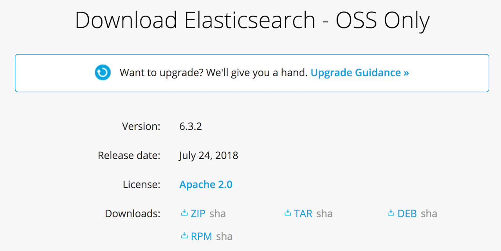

Elastic Satck 6.3 부터는 기존의 X-Pack 상용 기능이 별도 설치가 아닌 기본 내장으로 변경되었습니다. 이에 따른 새로운 설정법에 대해 설명합니다. Elastic Cluster 생성과 기본 설정에 대한 부분은 이전의 Elastic Cluster 구성 시리즈를 참고하세요.
1. 서버 생성 및 Elasticsearch RPM 설치
2. 메모리, 네트워크 설정 및 플러그인 설치
3. 클러스터 구성 및 마스터, 데이터 노드 설정
4. Kibana 설치 및 X-Pack Monitoring 확인
5. NFS 구성 및 elasticsearch 추가 설정
6. X-Pack Security를 이용한 SSL 및 TLS 설정
7. X-Pack License 적용 및 사용자 생성
8. Logstash 설치 및 Elasticsearch 기본 템플릿 설정
Elastic Stack 6.3 버전부터 큰 변화가 있었습니다. 기존에 별도 플러그인으로 제공하던 기능들을 기본 배포 패키지에 포함시키게 되었습니다. 이에 대한 내용은 Elastic 공식 페이지의 아래 블로그 포스트를 참고하세요.
https://www.elastic.co/kr/blog/doubling-down-on-open
6.3 버전부터는 x-pack 플러그인 설치팩을 제공하지 않습니다. 2018년 8월 부터는 X-Pack 이라는 브랜드도 버리고 Elastic 확장 기능 (Elastic Feature) 라고만 명명하고 있습니다. 6.2 이전 버전에서는 bin/elasticsearch-plugin install x-pack 명령으로 계속 설치가 가능합니다. 6.3 버전 부터는 다운로드 페이지 에서 아래와 같이 확장 기능이 포함된 배포판을 내려받을 수 있습니다.
라이센스 정책이 Elastic License로 바뀐 것을 볼 수 있습니다. 예전처럼 Apache 2.0 라이센스 버전을 내려받으려면 https://www.elastic.co/downloads/elasticsearch-oss 처럼 각 제품의 -oss 페이지에서 내려받을 수 있습니다.

cluster 구성
3개의 서버에서 마스터, 데이터 노드등의 설정은 따로 구분하지 않고 3개의 노드로 클러스터를 구성 해 보겠습니다. 구성할 클러스터 정보와 각 서버들의 IP 주소는 아래와 같습니다. 그리고 각 서버에서 elasticsearch 노드들은 elastic 리눅스 계정으로 실행하겠습니다.
- 클러스터명 : es-cluster
- 노드명: es-node1, es-node2, es-node3
- 각 서버 IP 주소 : 179.34.27.193, 179.34.16.96, 179.34.22.211
디스커버리 정보를 IP 주소로 적어도 되지만 좀 더 편하게 하기 위해 /ect/hosts 파일에 아래 정보를 추가하겠습니다.179.34.27.193 es-node1
179.34.16.96 es-node2
179.34.22.211 es-node3
이제 각 서버별로 elasticsearch.yml 파일에 아래 설정들을 추가합니다.cluster.name: es-cluster
node.name: ${HOSTNAME}
network.host: _site_
bootstrap.memory_lock: true
discovery.zen.ping.unicast.hosts: ["es-node1","es-node2","es-node3"]
network.host 설정을 실제 IP 주소로 주면 (_site_로 하면 자동으로 잡습니다) 부트스트랩 체크를 해서 바로 실행이 되지 않을 수 있습니다. 보통은/etc/security/limits.conf
파일에elastic soft memlock unlimited
elastic hard memlock unlimited
elastic - nofile 65536
내용을 추가 해 주면 실행 됩니다. elastic 은 실행 할 리눅스 계정입니다. 정확한 것은 Bootstrap Checks 문서를 참고하세요.
이제 es-node1 과 같은 서버에서 kibana를 실행하겠습니다. kibana.yml 파일에 다음 설정을 추가합니다.server.host: "es-node1"
elasticsearch.url: "http://es-node1:9200"
이제 kibana 를 실행시켜 보겠습니다. 6.3 버전 부터는 이전 버전과 달리 Basic 기능(APM, 모니터링 등) 들이 이미 설치 된 채로 구동되는 것을 확인할 수 있습니다.
모니터링 설정
모니터링 기능은 Basic 라이센스 이기 때문에 미리 설치는 되어 있으나, 모니터링 데이터를 수집하고 있지는 않습니다. Kibana 의 모니터링 메뉴에 가서 Turn on monitoring 버튼을 클릭하기만 하면 모니터링 기능이 활성화 됩니다.

모니터링 기능을 활성화하고 나면 아래와 같이 모니터링 정보가 나타납니다.
Gold / Platinum 기능 활성
Security, Graph, Machine Learning 등의 기능은 Gold, Platinum 등에서 사용 가능한 유료 기능입니다. 이 기능을 활성화 하려면 Kibana의
Management > License Management 메뉴에 가서
Start a 30-day trial을 선택하고 30일 간 Platimun 기능을 무료로 사용 하던가Update your license를 선택하고 구매한 Gold / Platinum 라이센스를 업로드 해서 활성화 할 수 있습니다.
하지만 라이센스를 업로드 하려고 하면 아래와 같이 Security 설정에서 TLS를 적용해야 한다고 나옵니다.
우선은 30일 트라이얼로 전환한 뒤 Security 와 TLS를 활성화 하고 다시 라이센스를 적용해야 할 것 같습니다. Start a 30-day trial 을 선택하여 트라이얼을 활성화 시킵니다.
Kibana 화면을 새로고침 해 보면 Graph, Machine Learning 등의 플래티넘 기능들이 활성화 된 것을 확인할 수 있습니다.
Security 설정
하지만 Security 기능은 처음부터 활성화 되어 있지 않습니다. 6.2 버전 까지는 x-pack 을 확장팩으로 설치하게 되면 기본적으로 모든 x-pack 기능들의 설정이 enabled 되어 실행이 되었습니다. 하지만 Security의 경우는 6.3 부터는 disabled 가 디폴트로 되어 6.2 이전 버전에서 6.3 이후 버전으로 업그레이드 하는 경우 좀 복잡할 수 있습니다.
Security 기능을 활성하려면 elasticsearch.yml 파일에 설정을 추가 해 줘야 합니다. 이 설정이 다르면 노드들이 바인딩 되지 않기 때문에 노드별로 할 수가 없어서 어쩔 수 없이 full cluster restart 를 해야 합니다.
elasticsearch.yml 파일에 아래 설정을 추가한 뒤 모든 노드를 재시작합니다.xpack.security.enabled: true
위 설정은 6.3 기준입니다. x-pack 이라는 브랜딩을 앞으로 사용하지 않기 때문에 6.x 이후 어느 시점에서는 위 설정 방법도 바뀔 수 있습니다.
Security를 활성화 한 뒤에는 자동으로 생성되는 기본 계정들의 패스워드를 설정 해 줘야 합니다. 노드가 실행되고 있는 상태에서 새로 콘솔을 열고 elasticsearch 홈 디렉토리 아래 bin 디렉토리 아래에 있는 elasticsearch-setup-passwords 명령을 실행하면 기본 계정들의 패스워드를 설정할 수 있습니다. 실행 가능한 옵션은 아래 두가지가 있습니다.
- auto : 임의의 패스워드를 설정합니다. 패스워드들은 이 명령 실행 후 콘솔에 딱 한번 나타나기 때문에 다른곳에 잘 적어 보관해야 합니다.
- interactive : 각 계정별로 패스워드를 직접 설정합니다.
저희는 interactive 로 해 보겠습니다.[]$ bin/elasticsearch-setup-passwords interactive
Initiating the setup of passwords for reserved users elastic,kibana,logstash_system,beats_system.
You will be prompted to enter passwords as the process progresses.
Please confirm that you would like to continue [y/N]y
Enter password for [elastic]:
Reenter password for [elastic]:
Enter password for [kibana]:
Reenter password for [kibana]:
Enter password for [logstash_system]:
Reenter password for [logstash_system]:
Enter password for [beats_system]:
Reenter password for [beats_system]:
Changed password for user [kibana]
Changed password for user [logstash_system]
Changed password for user [beats_system]
Changed password for user [elastic]
[]$
위 명령에는 보이지 않았지만 elastic,kibana,logstash_system,beats_system 각 계정에 대해 설정할 패스워드를 2번씩 쳐 넣습니다. 저는 모든 계정의 패스워드를 changeme 로 했습니다. 패스워드를 넣지 않고 curl 명령을 한번 날려보고, 다시 -u elastic:changeme 를 추가하고 날려봐서 제대로 설정이 되었는지 확인합니다.[]$ curl es-node1:9200
{"error":{"root_cause":[{"type":"security_exception","reason":"missing authentication token for REST request [/]","header":{"WWW-Authenticate":"Basic realm=\"security\" charset=\"UTF-8\""}}],"type":"security_exception","reason":"missing authentication token for REST request [/]","header":{"WWW-Authenticate":"Basic realm=\"security\" charset=\"UTF-8\""}},"status":401}
[]$ curl es-node1:9200 -u elastic:changeme
{
"name" : "kr-demo-service",
"cluster_name" : "es-cluster",
"cluster_uuid" : "ZJ1eRGTRSzeiUzT0MTY--Q",
"version" : {
"number" : "6.3.2",
"build_flavor" : "default",
"build_type" : "tar",
"build_hash" : "053779d",
"build_date" : "2018-07-20T05:20:23.451332Z",
"build_snapshot" : false,
"lucene_version" : "7.3.1",
"minimum_wire_compatibility_version" : "5.6.0",
"minimum_index_compatibility_version" : "5.0.0"
},
"tagline" : "You Know, for Search"
}
이제 kibana 에도 아래 설정을 추가하고 kibana를 실행해서 로그인 화면이 나타나는지 확인합니다.xpack.security.enabled: true
elasticsearch.username: "kibana"
elasticsearch.password: "changeme"
슈퍼유저 계정인 elastic / changeme 를 넣고 로그인 합니다. Management 메뉴에 가 보면 Security 메뉴도 생성된 것을 볼 수 있습니다.
아직까지는 라이센스를 업로드 하려고 하면 여전히 TLS 설정이 안 되었기 때문에 업로드가 불가능합니다. 예전에 X-Pack Security를 이용한 SSL 및 TLS 설정 포스트에서 한번 설명은 했는데 6.3에서 인증파일 생성 프로그램 경로가 바뀌어서 다시 한번 설명 하고 넘어가겠습니다.
이미 회사 서버에 사용중인 인증키가 있다면 그대로 사용이 가능합니다. 아직 없다면 인증키를 만들 수 있는 프로그램이 elasticsearch/bin 디렉토리 아래에 있습니다. bin/elasticsearch-certgen 파일입니다. elasticsearch 설치 디렉토리에서 이 프로그램을 실행합니다.[]$ bin/elasticsearch-certgen
...
Let's get started...
Please enter the desired output file [certificate-bundle.zip]:
Enter instance name: es-cluster
Enter name for directories and files [es-cluster]:
Enter IP Addresses for instance (comma-separated if more than one) []: 179.34.27.193,179.34.16.96,179.34.22.211
Enter DNS names for instance (comma-separated if more than one) []: es-node1,es-node2,es-node3
Would you like to specify another instance? Press 'y' to continue entering instance information: n
Certificates written to /home/elastic/elasticsearch-6.3.2/certificate-bundle.zip
- 먼저 저장할 파일 이름을 물어보는데 (enter the desired output file) 그냥 엔터를 치면
certificate-bundle.zip으로 저장됩니다. - 다음으로 인스턴스명을 물어봅니다. 저는
es-cluster라고 했습니다. - 다음으로 디렉토리를 물어보는데 그냥 엔터를 치면 인스턴스명과 동일하게 하고 넘어갑니다.
- 다음은 노드들이 있는 서버의 IP 주소들을 쉼표(,)로 구분해서 적어줍니다.
179.34.27.193,179.34.16.96,179.34.22.2113개를 적었습니다. - 다음은 마찬가지로 노드들이 있는 서버의 호스트명을 쉼표(,)로 구분해서 적어줍니다.
es-node1,es-node2,es-node3를 적었습니다. - 인증키를 추가로 안 만들꺼면 n 을 눌러 종료합니다.
종료하고 나면 bin/elasticsearch-certgen 명령을 실행한 디렉토리에 certificate-bundle.zip 있을겁니다. 저는 이것을 elastic 계정 홈 디렉토리 아래에 cert 라는 디렉토리를 만들고 그 아래에 압축을 풀었습니다.[~]$ cd
[~]$ mkdir cert
[~]$ cd cert/
[cert]$ mv ../elasticsearch-6.3.2/certificate-bundle.zip ./
[cert]$ unzip certificate-bundle.zip
Archive: certificate-bundle.zip
creating: ca/
inflating: ca/ca.crt
inflating: ca/ca.key
creating: es-cluster/
inflating: es-cluster/es-cluster.crt
inflating: es-cluster/es-cluster.key
cert 디렉토리 아래에 ca, es-cluster 디렉토리가 생기고 그 아래 .crt, .key 파일들이 생성됩니다.
이제 elasticsearch.yml 에 아래 설정을 추가하고 노드들을 재시작합니다.
xpack.ssl.key: /home/elastic/cert/es-cluster/es-cluster.key |
당연히 위 파일들은 모든 서버들의 동일한 경로에 복사되어 있어야 합니다. 가능하면 이런 파일들은 NFS 같은 네트워크 디렉토리를 사용하는 것이 좋습니다. 노드를 재시작 하면 이제 TLS가 활성화 되어 노드들끼리 9300번 포트에서 하는 TCP 통신은 모두 암호화되어 전송됩니다.
이제 Management > License Management 메뉴에 가서 가지고 있는 라이센스 키를 업로드 하면 정상적으로 사용 기간이 라이센스 기간 만큼 늘어나게 됩니다.